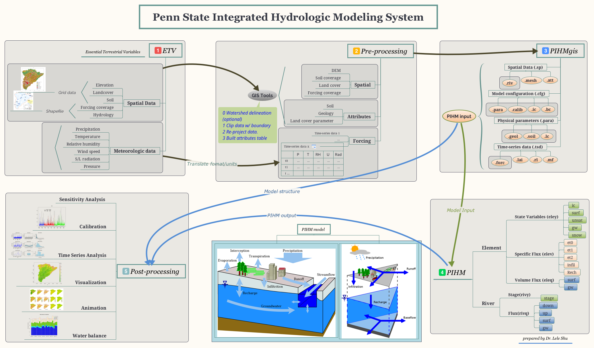
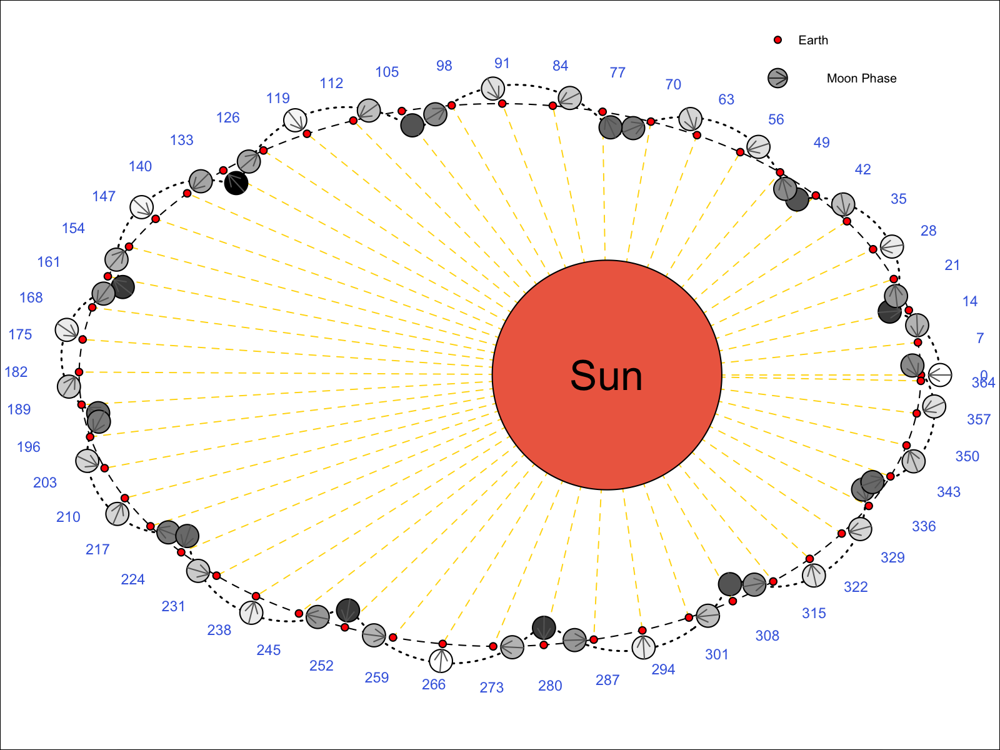

PhD of Water Resources Engineering
PhD of Water Resources Engineering
Minor: Computational Science
223 Hoagland Hall
Davis, CA 95616
llshu@ucdavis.edu
lele.shu@gmail.com
About Me I am a postdoctoral researcher in Department of Land, Air and Water Resources, University of California, Davis. My research interest is in the computational hydrologic model, hydrologic data mining, and integrated Coupled Nature-Human System modeling.
Research Interests
Develop and use distributed models to understand the hydrological response from watershed to continental scale, under stress of climate and landuse change.
Advance data mining and statistical downscaling modeling in hydrology. Data fusion and data mining on traditional hydrological observations and soft data.
Spatial heterogeneity and homogeneity in runoff, evaporation, subsurface fluxes and in their sensitivity to their controls (e.g. snow fall regime, aridity, reaction coefficients).
High-performance/parallel computing in hydrologic models.
Coupled Nature-Human watershed modeling.
Education
2012 - 2017, Pennsylvania State University (University Park, Pennsylvania, USA). PhD in Water Resource Engineering, Minor in Computational Science
2006 - 2009, University of Chinese Academy of Sciences (Lanzhou, China). M.S. in Remote Sensing
2001 - 2005, Lanzhou University (Lanzhou, China). B.S in Geography Information System
Work Experiences
2017 - Present Postdoctoral Researcher University of California, Davis (Davis, CA)
Hydrologic modeling on water availability (groundwater and snowpack) in the Central Valley in California in history and future. link
PIHM v4.0 — Parallel computing, lake modeling, calibration, independent river network, new data structure, bug fixed.
PIHMgisR — GIS data process, sensitivity and hydrologic analysis, spatial data visualization and animation. PIHMgisR.
AutoPIHM —Automatically download, process global essential terrestrial data to build hydrologic model, to analysis and to visulize in 2D/3D. AutoPIHM 
RoundAndRound — Calculate and visualize object in orbit, for example Sun-Earth-Moon relation. RoundAndRound 
2012 - 2017 Research Assistant Pennsylvania State University (University Park, PA)
- Development of Penn State Integrated Hydrologic Model (PIHM)
- Development of Cellular Automation Landuse Change Model (CALUC) — Top-down Cellular landuse change model
- Hydrologic analysis tool (R and matlab) —Read, write, parameterize, analysis(time series, spatial and uncertainty analysis) and visualize (plot, 3D/3D and animation).
- Hydrologic data process tools ®—Automatically download data from national data server and convert the data in GRIB, HDF, NetCDF format to other Time-Series format.
- Development of HydroTerre Conversion Tool (Java)—Convert the spatial and meteorological data from HydroTerre Data Server
2009 - 2010 Invited Lecturer Lanzhou Res. and Env. Tech College (Lanzhou, China)
Publications
L. Shu, P. Ullrich, C. Duffy. PIHM++, numeric watershed hydrologic modeling with finite element method. Environmental Modeling and Software (Submitted 2019)
B. Zhang, Y. Yuan, L. Shu, E. Grosholz, Y. Guo, L. Zhai, A. Hastings, J. Cuda, J. Qiu. Scaling up from plant stress response in greenhouse to landscape scale suitability for the distribution of an invasive species (Submitted 2019)
X. Yu, Z. Xu, D. Moraetis, N. Nikolaidis, L. Shu, et al. Coupled surface-subsurface modeling of fresh submarine groundwater discharge of an island in the Mediterranean Sea. Advances in Water Resources (Submitted 2019)
L. Shu, P. Ullrich, C. Duffy. Quick automated watershed modeling with the Penn State Integrated Hydrologic Model (PIHM): Essential data, simulation, applications and visualization (Draft 2019)
L. Shu, C. Duffy. Competitive Lotka-Volterra System Cellular Automata Land Use Change Model. (Draft 2019)
L. Shu, C. Duffy. Comparison of the simulated spatial distributed water balances by landuse classes in Conestoga Watershed. (Draft 2019)
L. Shu, C. Duffy. Developing plausible scenarios for the competing impacts of landuse change and climatic change in the Conestoga Watershed: past, present and future. (Draft 2019)
L. Shu, C. Duffy. Reconstructing the role of landuse change on water yield at the Maya urban center Tikal, Guatemala [700-800 CE]. (Draft 2019)
D. Garijo, D. Khider, V. Ratnakar, Y. Gil, … L. Shu, … , An Intelligent Interface for Integrating Climate, Hydrology, Agriculture, and Socioeconomic Models , in ACM 24th International Conference on Intelligent User Interfaces (IUI’19), 2019, p. 111–112.
X. Yu, A. Lamacova, L. Shu, C. Duffy, P. Krám, J. Hruška, T. White, K. Lin. (2019). Data rescue in manuscripts: a hydrologic modelling study example. Hydrological Sciences Journal
N. Ward, L. Shu, et al. Integrating fast and slow processes is essential for simulating human-freshwater interactions. Ambio (2018)
K.M. Cobourn, … L. Shu, … From concept to practice to policy: modeling coupled natural and human systems in lake catchments. Ecosphere, 8. 2018
L. Shu, Z. Nan. A novel system for near real-time field observation based on Twitter-like services and GSM/SMS network. Journal of Glaciology and Geocryology[J], 32(5). 2010.
Z. Nan, L. Shu, Y. Zhao, et al. Integrated modeling environment and a preliminary application on the Heihe river basin[J]. SCIENCE CHINA E: Technological Sciences. 2011, 54(8): 2145-2156
K. Feng, Z. Nan,Y. Zhao, L. Shu. Prototype Development for an Integrated Modeling Environment Based on Plugins. Remote Sensing Technology and Application[J]. 23(5). 2008.
Conferences
2019 AGU, San Francisco, California, USA
2018 AGU, Washington DC, USA
2018 California Water & Environmental Modeling Forum, Sacramento, California, USA
2017 AGU, New Orleans, Louisiana, USA
2015 AGU, San Francisco, California, USA
2015 Penn State Graduate Exhibition, University Park, Pennsylvania, USA
2014 AGU, San Francisco, California, USA
2014 Global Lake Ecological Observatory Network (GLEON) 16, Orford, Quebec, Canada
2014 Green Infrastructure and Stormwater Management SAC Meeting
2013 AGU, San Francisco, California, USA
Research Projects
2018 Model Integration through Knowledge-Rich Data and Process Composition
2017 An Integrated Evaluation of the Simulated Hydroclimate System of the Continental US
2017 Advanced Statistical-Dynamical Downscaling Methods and Products for California Electrical System Climate Planning
2015 CNH-L: Linking Landuse Decision Making, Water Quality, and Lake Associations to Understand Human-Natural Feedbacks in Lake Catchments
2013 Land, Water, and Territory: A 3,000-Year Study of Niche Construction and Cultural Evolution in the Tikal National Park, Guatemala
2012 NSF Hydrologic and Water Quality Modeling for Green Infrastructure
2008 Simultaneous Remote Sensing and Ground-based Experiment in the Heihe River Basin: Scientific Objectives and Experiment Design
2008 Heihe Watershed Allied Telemetry Experimental Research (HiWATER)
2006 Land and Water Resources in Heihe River Basin Decision Support System for Sustainable Development Based on Scientific Models and Three-dimensional Gaming Experience
2006 GIS-based Hydrology and Water Resources Integrated Modeling Environment Research in Heihe River Basin
Skills
Programming: ◦ C/C++ ◦ R ◦ Java ◦ Python ◦ Shell ◦ Matlab/Octave/SciLab ◦ Fortran ◦ Qt
Professional software: ◦ PIHM/PIHMgis ◦ ArcGIS/GRASS GIS/QGIS ◦ SWAT ◦ HYDRUS ◦ HEC-RAS ◦ PAWS/PRISM
Courses Prepared To Teach
Numerical methods in geosciences
Geographic Information System
Data Mining in R
Data structure and algorithm
Advance C/C++ programming